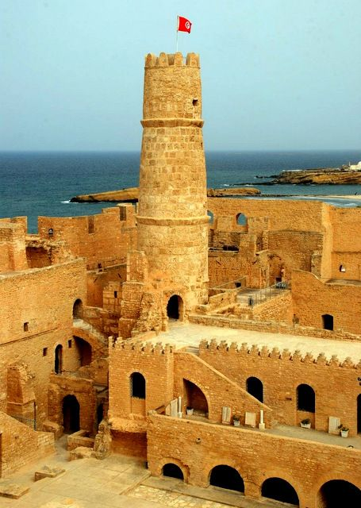
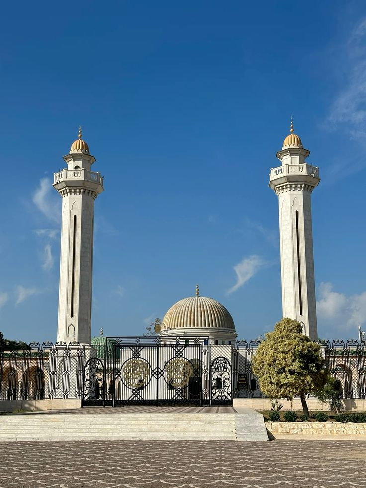
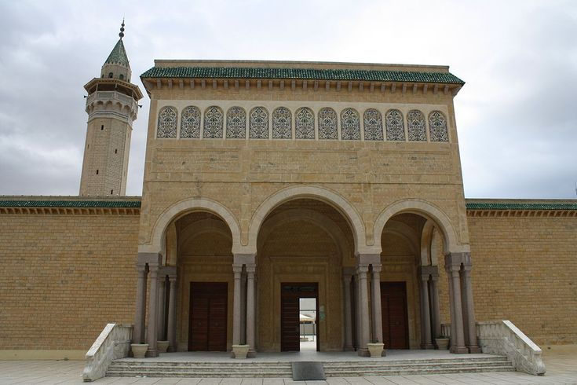
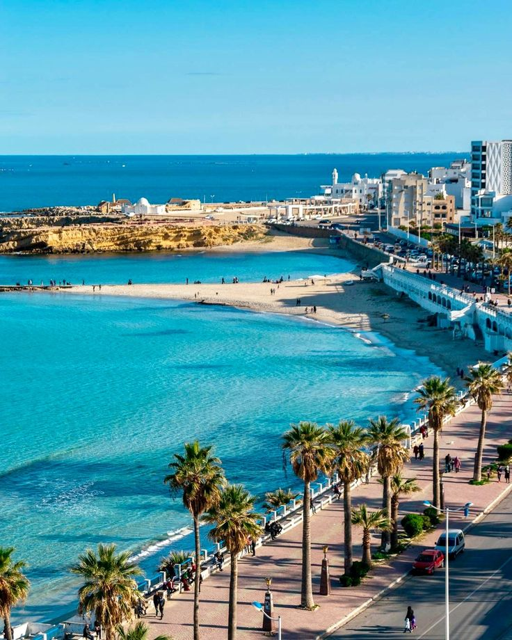
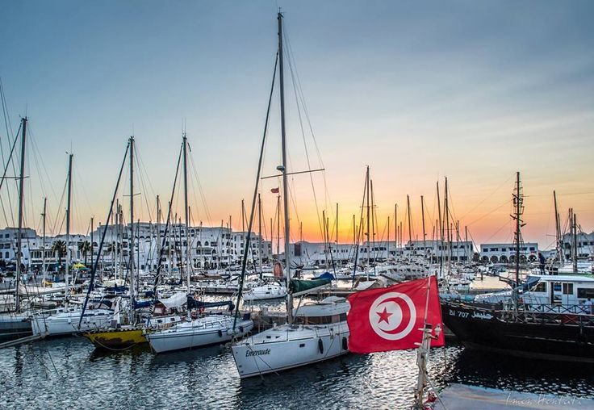
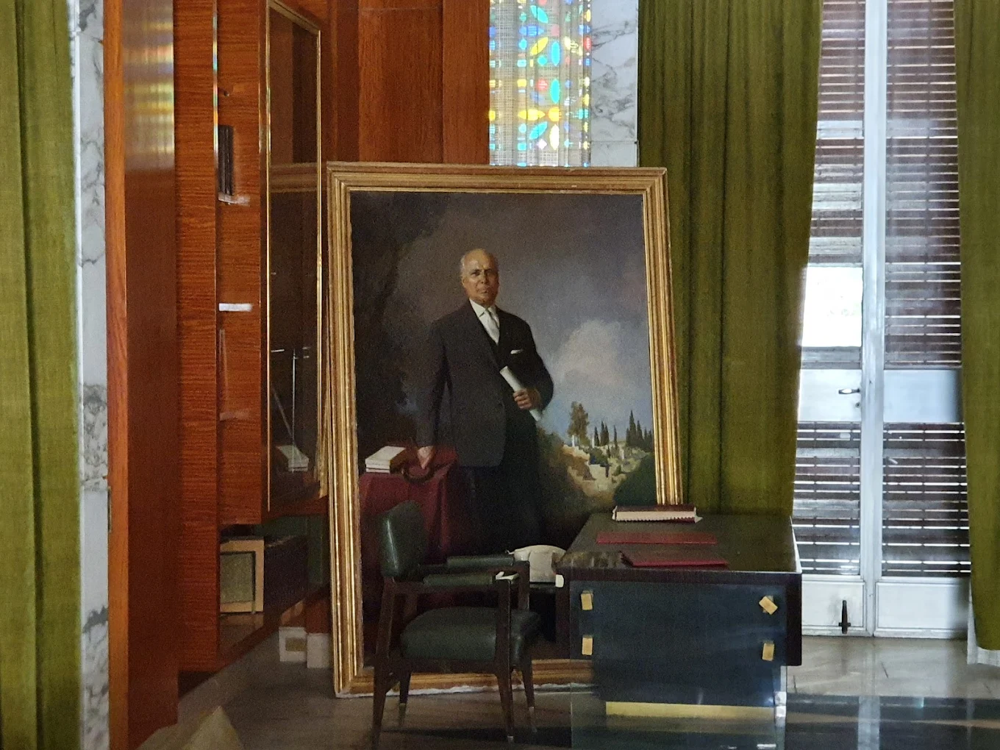

Ribat de Monastir
Le Ribat de Monastir est une forteresse emblématique datant du IXᵉ siècle. Il symbolise l'histoire militaire et religieuse de la ville et offre une vue panoramique sur la mer Méditerranée.
Découvrez les lieux emblématiques de Monastir, entre patrimoine historique et attractions touristiques

Le Ribat de Monastir est une forteresse emblématique datant du IXᵉ siècle. Il symbolise l'histoire militaire et religieuse de la ville et offre une vue panoramique sur la mer Méditerranée.

Le Mausolée Habib Bourguiba est le lieu de repos du président fondateur de la Tunisie moderne, un site incontournable de Monastir avec son architecture impressionnante.

La Mosquée Bourguiba, moderne et élégante, se trouve près du mausolée et représente un symbole religieux et culturel majeur de la ville.

Les plages de Monastir offrent du sable fin et des eaux claires, idéales pour se détendre et profiter du soleil méditerranéen dans un cadre enchanteur.

La Marina Cap Monastir est un port de plaisance avec restaurants et cafés, parfait pour se promener et admirer les bateaux dans une ambiance conviviale.

Le Musée Habib Bourguiba permet de découvrir l'histoire du président et d'observer des objets et documents personnels qui retracent son parcours.